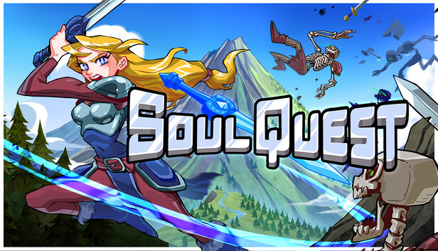
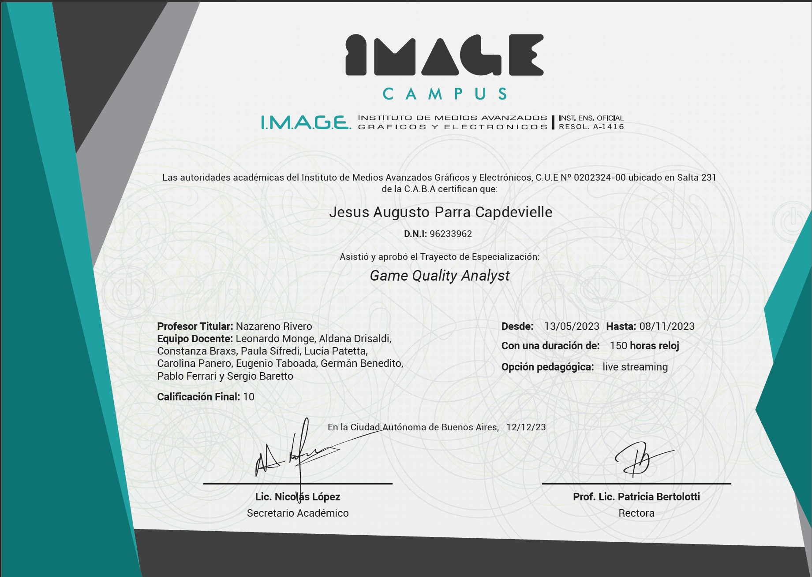
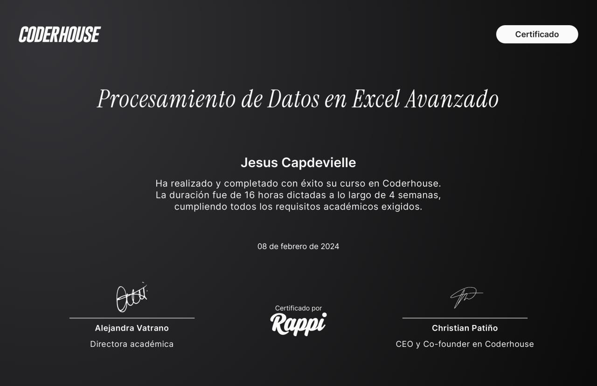
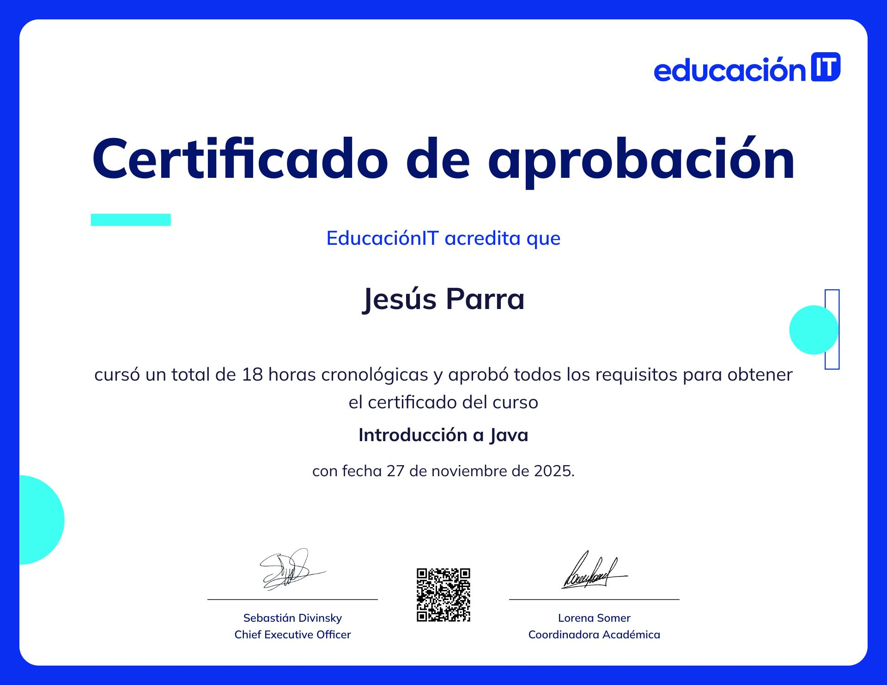

QA Areas
Core QA methodologies used across software validation, live operations, and game production workflows.
Tools & Technologies
Technical Growth
Projects
Dreamcore
Released
Point of Contact between QA and development team. Managed regression cycles, defect prioritization, and release coordination.

Rebel Engine
Released
Participated in full QA cycle from alpha to release. Reported gameplay and UI bugs across multiple builds.

Soul Quest
Released
Conducted bug hunting, edge case testing, and gameplay validation across release builds.

Don't Kill Rumble
In Development
QA-to-dev Point of Contact during pre-production. Managed issue escalation and testing workflows.
Certificates





